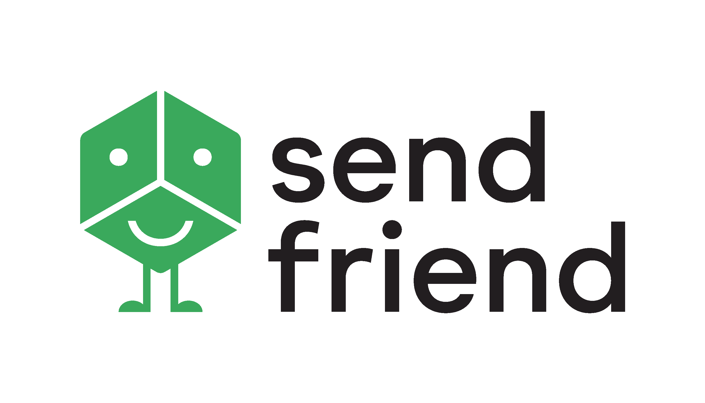

This past summer, I was given the opportunity to work as a developer at the
NASDAQ Innovation Lab. Working alongside five other interns, we developed
a prototype full-stack to monitor fraudulent economic activity in sports betting markets.
Through the experience, I learned a lot about working with people and what it is like
to "start a company" from scratch. Our project culminated with the team giving a
product pitch and demo to the company's CTO.
In my free time, I worked under with Innovation Lab's Chief Data Scientist to design
a web crawler that uses reinforcement learning to interpret web pages. Although, I didn't
have enough time to fully implement the tool, I mention it because I still built a full-stack application,
was exposed to new machine learning methods, and designed a data acquisition tool that leverages ML.

Over the spring semester, I worked in the CSAIL lab at MIT. At CSAIL, I worked on a project
to improve DNN training efficiency through methods of data and model parallelism. Through the
project I was exposed to the TensorFlow and Horovod libraries. I also gained invaluable
experience in how to efficiently work on a server and disect research papers. Most importantly, I
learned that my passion for machine learning lies in creating models, and not
optimizing the software architecture that surrounds them.
Last IAP, I worked at LiveData Utilities in Cambridge, Boston. There, I built
software architecture for a Random Forest Regression model that predicts a community's
electrical consumption based off of weather and date time. My software retrived weather forecasts,
automated model training and deployment, pipelined input data, and integrated Influx DB to hold model results
and data. The experience gave me more practice in writing production level software under great mentorship.

Last summer, I worked at SendFriend in Cambridge, Boston. SendFriend is remittance application
that leverages blockchain to make transactions both cheap and quick. At SendFriend,
I did a lot of high impact work for the startup. For example, on the first day, I was tasked to
proof-read the company's business plan. Besides that, I developed a demo application user interface
that was used to pitch to investors. Working with a very small team, I learned how
to work autonomously and to find solutions to new problems I faced on a daily basis.